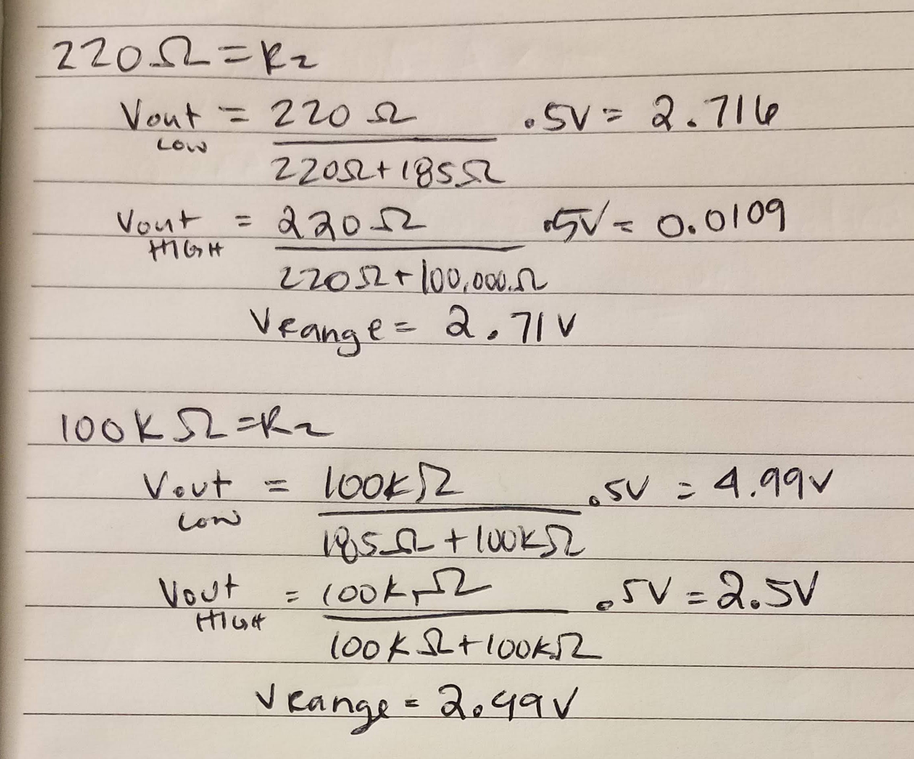
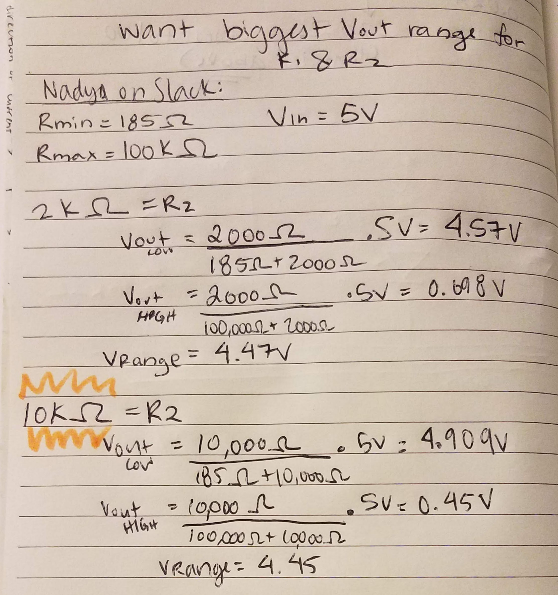
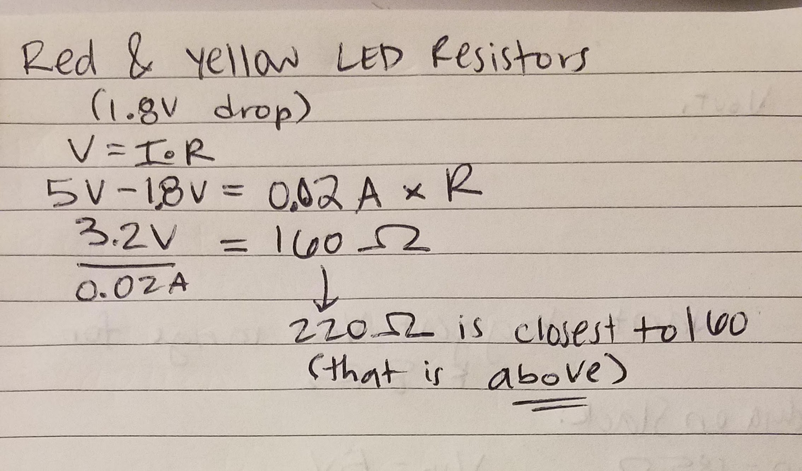

Lily's Assignment 4!
Here is all the documentation for assignment 4!

This project uses remote sensing and a transistor At different levels of light being read by the photoresistor, different things happen to the LEDs. For bright light, like from overhead fluorescents, the red LED blinks slowly, on and off for 400 milliseconds each. As the light reaching the photoresistor lessens, like when I cast a shadow over it with my hand, the blinking goes faster, at 150 milliseconds each on and off. When the photoresistor is in darkness, like when I covered it with my hand, the blinking is very rapid, blinking on and off for 75 milliseconds each.
The yellow LED does not blink; rather, it gets brighter or dimmer along with the exposure or shielding from light, respectively.
This image shows my circuit, which has two LEDs and a photoresistor. The LEDs have to be connected
to the pins with tildes (~) because these are the pins that allow for analogWrite()to write the
analog value measured by the photoresistor to the pin.

Here is my schematic. I learned the symbol for the photoresistor from electronics-notes.com.

Lia Johansen/Prof. Nadya helped with this:
To find the resistor value to use with the photoresistor, I had to do some calculations using the min and max resistance of the photoresistor, depending on the amount of light it is exposed to. I used the multimeter to get the max and min values, measuring when the lights were on, and when the room was dark. These are the values I read:
Rmin: 185 ohms
Rmax: 100k ohms
Then, I looked for the resistor that would allow analogRead() to read the widest range of values possible at the voltage divider. If the photoresistor were capturing the whole range, the readings would go from 0-1023 (a full 5 volt range); mine only went from about 30 to 900, that's why I constrained my range to those values in my void loop.
Next, I calculated the Vout values for both the low and high resistance values; then, I subtracted Vout_low from Vout_high to get the voltage range; I checked for 220 ohms, and the range was pretty small, so I went up to 100k ohms, and the range was also small. Then, I went down to 2k ohms and the range was 4.47V. I did the calculation for 10k ohms, and the range was slightly smaller than the 2k resistor, at 4.45V.
Even though the 10k resistor had a range that was a tiny bit smaller, I chose that resistor because I figured using a higher resitor would be a safer bet, and the tiny difference in voltage range between 10k and 2k would not make a visible difference.

Above are my calculations for the 2k and 10k ohm resistors.

Here is my code for this assignment:
// include IR remote library so I can use my remote
#include
// set a variable equal the pin for the remote sensor
const int sensPin = 7;
// set variable equal to pin for transistor
const int transPin = 10;
// sets a key_value for what key has been pressed on the remote
unsigned long key_value = 0;
// creates an object irrecv
IRrecv irrecv(sensPin);
//creates a variable to store the results of the button press
decode_results results;
// this setup code runs once
void setup() {
// tells arduino to communicate with serial monitor
Serial.begin(9600);
// enables the remote sensor to "listen" for signals
irrecv.enableIRIn();
// transistor pin is set as output
pinmode(transPin, OUTPUT);
}
// this code will run in a repeated loop
void loop() {
// checking to see if a signal has been received from the remote sensor
if (irrecv.decode(&results)){
// if a code has been recieved, check what it is. 0XFFFFFFFF
if (results.value == 0XFFFFFFFF) {
// sets the object's value to the last key value
results.value = key_value;
}
// checks if the button 0 on the remote was pressed
if (results.value == 0xFF6897) {
// prints "0" in the serial monitor
Serial.println("0");
// turns LED strip to HIGH
analogWrite(transPin, 255);
}
// checks if the button 1 on the remote was pressed
if (results.value == 0xFF30CF) {
// prints "1" in the serial monitor
Serial.println("1");
// turns off LED strip when 0 is pressed
analogWrite(transPin, 0);
// can't press another button/turn of LED for one second
delay(1000);
}
// checks if the button 2 on the remote was pressed
if (results.value == 0xFF18E7) {
// prints "2" in the serial monitor
Serial.println("2");
// for loop that makes the LED incrementally brighter
for(int i = 0; i < 256; i++){
// turns LED on with variable brightness depending on the loop
analogWrite(transPin, i);
// delay 10 microseconds between loops
delay(10);
}
}
// checks if the button 3 on the remote was pressed
if (results.value == 0xFF7A85) {
// prints "3" in the serial monitor
Serial.println("3");
// loop that makes the LED strip incrementally dimmer
for(int i = 255; i >= 0; i--) {
// turns LED on with variable brightness depending on the loop
analogWrite(transPin, i);
// delay 25 microseconds between loops
delay(25);
}
}
// checks if the button 4 on the remote was pressed
if (results.value == 0xFF10EF) {
// prints "4" in the serial monitor
Serial.println("4");
// loops through code 5 times
for(int i = 0; i < 5; i++) {
// wait 1/10 of a second
delay(100);
// turn LED strip off
digitalWrite(transPin, LOW);
// wait 1/10 of a second
delay(100);
// turn LED strip on
digitalWrite(transPin, HIGH);
// wait 150 microseconds
delay(150);
// turn LED strip off
digitalWrite(transPin, LOW);
// wait 150 microseconds
delay(150);
// turn LED strip on
digitalWrite(transPin, HIGH);
// wait 200 microseconds
delay(200);
// turn LED strip off
digitalWrite(transPin, LOW);
// wait 200 microseconds
delay(200);
}
}
// sets key_value to the hex code of last button press
key_value = results.value;
// resumes so the next remote sensing value can be received (learned from github
irrecv.resume();
}
}
}